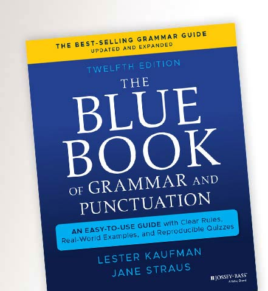
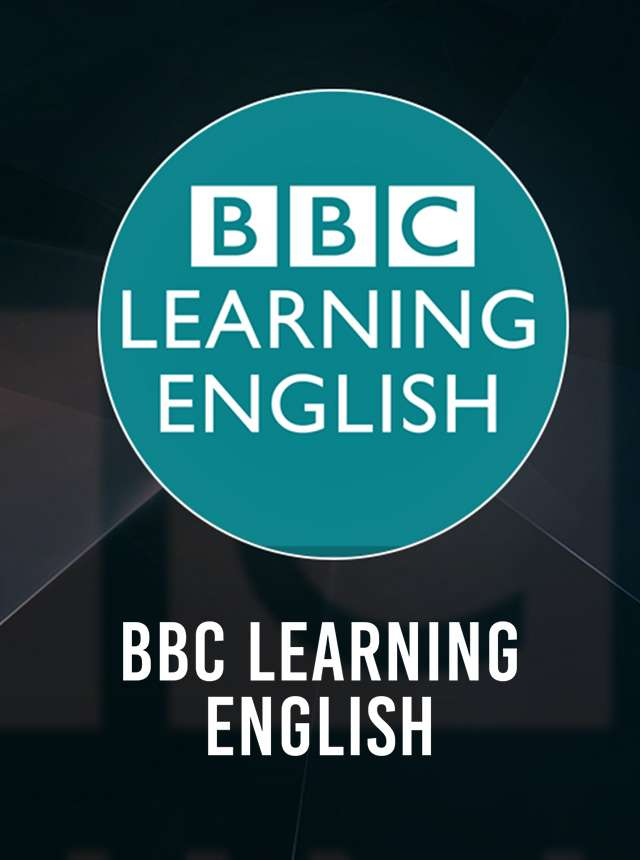
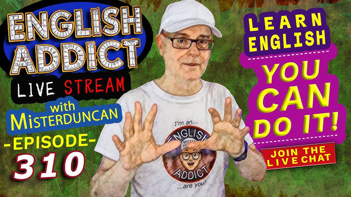

Resources
Welcome to the Resources section of Boston English Institute. Here, you'll find a curated collection of useful websites, engaging YouTube videos, and helpful PDFs to enhance your learning experience.
Useful Websites

A comprehensive guide to English grammar rules and usage.
YouTube Videos

Video lessons for improving your listening and comprehension skills.

Fun and engaging lessons for English learners.
PDFs

A detailed PDF guide to mastering grammar.

Commonly used words and phrases for daily communication.

Sample tests to prepare for English proficiency exams.